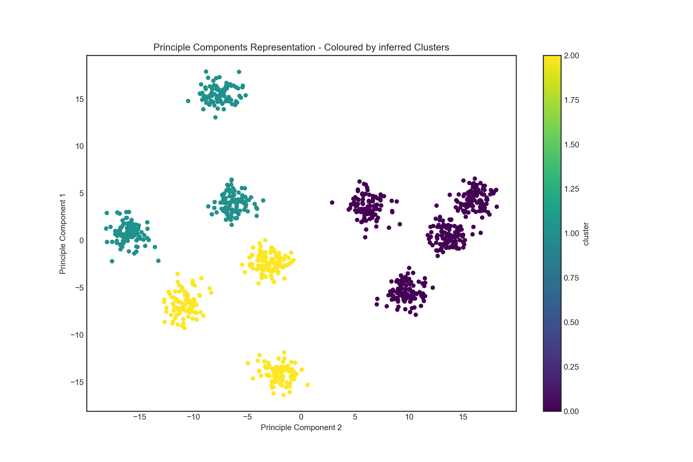

Chapter 3 TBD - Stationarity and Induction
3.1 Profiling: Segmentation and Expected Value
There is a wide range of segmentation methods which can be applied to the task of classifying both customers and products, patients and treatments. These classification schemas are vital inputs for any recommendation algorithm. They cluster individuals based on a wide array of features, which is to say that they simplify the question of expected action.
Instead of asking how might Rebecca, (aged between 18-25, from Spain, with a history of frugal purchases) react to a new sales promotion, you can ask about the conversion rate of the young female demographic. Depending on the task and the nature of the clustering algorithm, you might end up bucketing Rebecca with Sven (overweight male, history of lavish spending from Sweden) if, for example, their historic email open rates were similar. The responsibility for vetting each clustering schema lies with the user of the algorithm, but usually knowledge of the problem is enough to put some kind of context on the structural patterns unearthed by the algorithm.
Ideally we would parse out our data into the most relevant descriptive features, but in lieu of domain knowledge we can apply some data compression techniques such as principle components analysis to extract latent features in the data. These techniques are dangerous when applied without domain knowledge or some kind of supervision. A technique, in the same vein as PCA, called factor analysis tries to construct latent factors from correlations in the observed features. Historically this was abused to measure “intelligence” as a latent factor driving performance on aptitude tests. So while we should be wary of over-inflating artefacts of the data, the technique is useful for finding structure.
Starting from the covariance matrix of the scaled customer data :
\[ Cov(\mathbf{X}) = \operatorname{cov}[X_i, X_j] = \operatorname{E}[(X_i - \operatorname{E}[X_i])(X_j - \operatorname{E}[X_j])] \] For any observed set of customer attributes, their covariance matrix can be factorized (or decomposed) into a matrix product of the eigenvectors and eigenvalues, allowing for the original dataset to represented in lower dimensions in terms of the principle components. These components can in turn be analysed to express the manner in which each of the original features contributes to the new construct. Each component captures a proportion of the total variance observed in the original covariance matrix. If we’re lucky, a small number of the eigenvectors (principle components) can be shown to explain the variance in the data and thereby represent a complex customer problem in a reduced dimensional space.
X = df_customer[[x for x in df_purchases.columns
if 'customer_desc' in x]]
X_std = StandardScaler().fit_transform(X)
## Covariance Decomposition
cov_mat = np.cov(X_std.T)
eig_vals, eig_vecs = np.linalg.eig(cov_mat)
## Explained Variance
tot = sum(eig_vals)
var_exp = [(i / tot)*100 for i in sorted(eig_vals, reverse=True)]
cum_var_exp = np.cumsum(var_exp)
barh = plt.bar(range(len(var_exp)), var_exp, alpha=0.5, align='center',
label='individual explained variance')
plt.step(range(len(cum_var_exp)), cum_var_exp, where='mid',
label='cumulative explained variance')
plt.ylabel('Explained variance ratio')
plt.xlabel('Principal components')
plt.legend(loc='best')
plt.tight_layout()
plt.show()
Each customer can then be visualised as a complex of observed characteristics along the axes of the principle components in, for example, a two dimensional plane. In our case we saw that the two components account for around 60% of the total variance. Furthermore, we can overlay an interpretation on the components by associating group identifiers to portions of the plane.
kmeans = KMeans(init='k-means++', n_clusters=3, n_init=30)
kfit = kmeans.fit(X)
clusters = kmeans.predict(X)
X['cluster'] = clusters
sklearn_pca = sklearnPCA(n_components=2)
Y_pca = pd.DataFrame(sklearn_pca.fit_transform(X[[col for col in X.columns if
not 'cluster' in col]]))
X = pd.concat([X, Y_pca], axis=1)
X[[0, 1, 'cluster']].plot.scatter(x=0,
y=1,
c='cluster',
colormap='viridis')
plt.title("Principle Components Representation - Coloured by inferred Clusters")
plt.ylabel("Principle Component 1")
plt.xlabel("Principle Component 2")
plt.show()
In the dataset pictured in we’ve tried to represent the data in three groups inferred by a k-means clustering algorithm over the original observed features. This is not the most appropriate categorisation as can be seen by the manner in which 9 clear cohorts are speckled across the space. In other words there is more diversity in our customer base than the clustering is capable of expressing. That’s not to say all diversity needs to be captured. If our purpose is make the broadly correct action (e.g. sell, promote, no-action), the niceties can often be ignored. The principle components can be interpreted as linear weightings of the original customer descriptions, and some understanding of those observable features is required to assess if the principle component representation is sensble.
fig, ax = plt.subplots(figsize=(10, 5))
ax = sns.heatmap(sklearn_pca.components_,
cmap='YlGnBu',
yticklabels=[ "PCA"+str(x) for x in range(1,sklearn_pca.n_components_+1)],
xticklabels=['customer_desc_0', 'customer_desc_1', 'customer_desc_2',
'customer_desc_3', 'customer_desc_4', 'customer_desc_5',
'customer_desc_6', 'customer_desc_7'],
#cbar_kws={"orientation": "horizontal"}
ax=ax)
ax.set_aspect("equal")
plt.title("Component Weightings of the original observable variables")
plt.show()Couple this with a Silhouette score analysis of the clustering and we can see that our classes is too crude, collecting dissimilar customers together. A high silhouette score (closer to 1) would indicate that our clustering has captured the similar customers well. As it stands, we should probably go back to the drawing board.

The expected value of the customer is then something like the probability of purchase (however approximated) for the given customer multiplied by the net revenue of the average purchase in the same group. It’s these kind of idealisations and conceptual economies, which seemingly reasonable at the time, lead to systematic algorithmic skew. Unrefined constructs encourage brutish bulk actions across the arrayed field of customers. The same kind of concerns apply in the treatment of schizophrenic patients. They’re seperated out by crass groupings into high-functioning and other.
…emploment remains the primary marker of someone who is high functioning, as having a job is the most reliable sign that you can pass in the world as normal. Most critically, a capitalist society values productivity in its citizens above all else, and those with severe mental illness are much less likely to be productive in ways considered valuable: by adding to cycle of production and profit. pg51 in (Wang 2019)
This drive to categorisation serves a dual role. It’s diagnostically relevant but also useful as it allows us to measure the impact of broad classes of people on the financial bottom line. But it shouldn’t be forgotten that these profiles are often complex constructs abstracted from contingent or limited data.